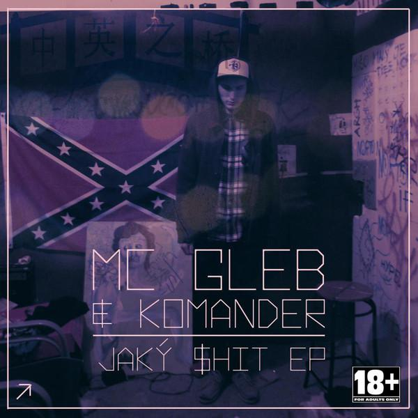
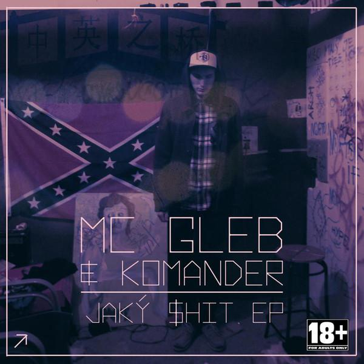

Základní informace
Gleb Veselov (* Pjatigorsk), známý pod uměleckým jménem Gleb (dříve Gleb Schizofrenik, Gleb: ZOO), je slovenský interpret původem z Ruska, narozený 3. května 1991 ve městě Pjatigorsk. Na Slovensko přišel zhruba ve dvou letech. Charakteristickými styly pro jeho tvorbu jsou grime, drum'n'bass a glitch hop. Ve své tvorbě se inspiruje především kulturou Velké Británie. Sám sebe nezařazuje mezi klasické slovenské rappery.
Hudební kariéra
Počáteční tvorba
Podle rozhovoru pro artattack.sk začínal rapovat už ve třinácti letech, později začal tvořit do drum'n'bassových beatů (hudební žánr elektronické taneční hudby). Jeho prvním vydaným dílem je Bombaklad mixtape z roku 2009. Na tomto albu převládá tzv. "špinavý" zvuk, je nejapný, drsný a úmyslně nedokonalý.
V roce 2011 vydal sbírku pod názvem Kaša tape.
V roce 2012 vydal Gleb první EP s názvem Jaký shit, kde se jeho hudební styl začíná více podobat tomu dnešnímu. Je nahrávaný v profesionálním studiu. Hudbu na albu produkoval Komander Ground, se kterým Gleb spolupracuje dodnes.

 

Součastnost
Gleb se později dostal pod křídla tehdejšího hudebního vydavatelství I LOVE PARTY PRODUCTION, dnes známého jako F*CK THEM, které spravuje YAK. SHA. Do jejich portfolia patří například i skupina Haha Crew, či Radikal Chef.
V roce 2013 pod tímto vydavatelstvím vydal mixtape Stanica Zoo, díky kterému se pomalu začal stávat známějším mezi širší veřejností. Na albu hostovali například umělci jako Delik, v produkci se objevily jména jako již zmíněný Komander Ground, či známý český DJ a producent NobodyListen. Jeho spolupráce s Delikem dále pokračovala, Gleb se objevil na jeho albech XXX Tape či MVP.
Gleb v roce 2014 vydal mixtape Stanica Zoo 2. Objevil se na portálu DatPiff, kde své mixtapy prezentují známí umělci. Opět zde převládá špinavější zvuk, Gleb používá podmazy britských grimeových umělců. Sám hovoří o albu jako o garážovém, nedokonalém, undergroundovém díle. V tomto roce se také objevil na debutovém albu Haha Crew Vlna.
Rok 2015 přinesl EP ZLOO, která byla prezentováno jako jeho nejvyspělejší počin.
...
V červnu roku 2022 vychází album BIG BOY FM. V albu ukazuje Gleb pokračující odstup od svého původního stylu drum and bass, kdy téměř každá jeho píseň spíše připomíná klasický rap 90. let s více moderními prvky, ale přesto dokázal dosáhnout milionu streamů na platformě Spotify v průběhu prvních dvou dnů vydání alba.
Jeho nejnovějším dílem je album DLHÁ CESTA DOMOV, která vyšla v květnu 2024.
Zdroj textu: Wikipedie (upraveno)